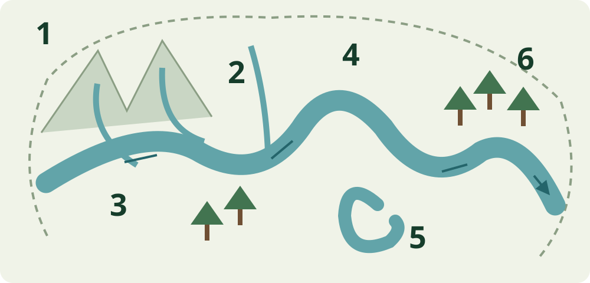

Activa las capas para explorar bosques, ríos, humedales, divisiones administrativas y áreas naturales protegidas de Madre de Dios.
Zona B
Vista general
Madre de Dios · cartografía educativa
Madre de DiosPerú · vista regional
0100 km
El mapa se cargará al llegar a esta sección.
Activa una capa para comenzar
Vista base educativa. Activa una capa para consultar su fecha, procedencia y limitaciones.
Contorno departamental de referencia; capas temáticas desactivadas.
Mapa educativo. Procedencia y fecha se indican en cada capa.
La capa Ríos muestra seis trazados documentados, no toda la red hidrográfica. El visor de áreas protegidas usa otra selección e incluye Tahuamanu.
Fuentes y metodología del mapa
El mapa reúne seis grupos de información: provincias, distritos, cobertura vegetal, ríos, humedales y áreas naturales protegidas. Cada ficha distingue la procedencia, la fecha disponible y las limitaciones del registro.
La cobertura vegetal procede de MINAM (2015) y las áreas protegidas de SERNANP. Los límites administrativos son referencias educativas cuya entidad generadora, fecha y escala no están documentadas. El visor no sustituye cartografía oficial ni representa necesariamente el estado actual del territorio.
Bosques, ríos y humedales forman una red de ambientes conectados que sostiene la biodiversidad y la vida de Madre de Dios. El relieve, el suelo y el ritmo del agua ayudan a entender por qué el paisaje cambia de un lugar a otro.
Bosques
La Amazonía no es un solo bosque
Clasificación utilizada: Mapa Nacional de Cobertura Vegetal — MINAM, 2015. Las tarjetas destacan algunas de las categorías que ya puedes explorar en el mapa; no sustituyen su lista completa. [1]
“Tierra firme” describe terrenos que no reciben la inundación fluvial habitual; no es una categoría adicional de este mapa. “Ribereño” describe la relación con una orilla, no una única unidad de cobertura. La cartografía incluye también vegetación no forestal.
Las relaciones ecológicas de estas tarjetas son explicaciones educativas. No son inventarios de especies, usos o amenazas de cada polígono. La presencia de fauna y el estado de un lugar deben comprobarse en campo.
Relieve y drenajeBosque de terraza altaPlataformas antiguas, alejadas de la inundación habitual.
Ambiente y vegetación
Terrazas de origen fluvial antiguo o tectónico, planas o disectadas. Bosque arbóreo; el agua de lluvia y el drenaje siguen influyendo en su suelo.
Fauna y función
La continuidad del dosel y del sotobosque ofrece refugio y rutas de desplazamiento; la biomasa almacena carbono.
Personas y cambios
El aprovechamiento forestal necesita conocer la regeneración. El desmonte o la apertura de accesos pueden fragmentar el hábitat.
Planicie aluvialBosque de terraza bajaLa cercanía al río no implica la misma inundación en todos los lugares.
Ambiente y vegetación
La unidad reúne terrazas jóvenes inundables y otras antiguas no inundables que la escala del mapa no permite separar. El drenaje y los sedimentos condicionan la vegetación.
Fauna y función
En las partes inundables, el pulso del agua cambia los espacios disponibles para organismos acuáticos y terrestres.
Personas y cambios
El uso de las orillas debe considerar las crecidas. La pérdida de vegetación o la alteración del cauce puede cambiar estas conexiones.
Árboles y bambúesPacal y bosques con pacaDos situaciones que la clasificación distingue.
Ambiente y vegetación
En el pacal predominan bambúes del género Guadua. En las categorías de bosque con paca predominan los árboles, acompañados de bambúes. Aparecen en distintas formas del relieve.
Fauna y función
La estructura densa del bambú crea un sotobosque distinto: los refugios y recursos disponibles cambian con la vegetación.
Personas y cambios
La paca puede proveer materiales, pero su extracción y la apertura del bosque deben considerar regeneración y hábitat.
Una cuenca es el territorio desde el que el agua drena hacia una salida común. Las quebradas y los afluentes llevan agua al río principal. El cauce es el espacio por donde circula el río; sus curvas son los meandros.

1
2
3
4
5
6
¿Cómo funciona un río amazónico? La cuenca contiene esta red. Los afluentes desembocan en el río principal; la flecha indica el sentido del agua. Esquema educativo de EcoSelva, sin escala ni ubicación cartográfica. 1 · Cuenca | 2 · Quebradas y afluentes | 3 · Río principal | 4 · Meandro | 5 · Cocha | 6 · Bosque ribereño
01
Del relieve al río
Lluvia, escorrentía y quebradas alimentan la red de drenaje. El agua puede transportar sedimentos y materia orgánica entre lugares.
02
Meandros y cochas
Cuando un meandro queda separado del cauce, puede originar un lago de herradura. “Cocha” es un nombre común de cuerpos de agua amazónicos; no todos tienen ese origen. La forma por sí sola no permite fechar el cambio.
03
Agua que conecta
Las crecidas pueden conectar cauce, cochas y bosque ribereño; al bajar el agua, algunas conexiones se reducen. La duración y frecuencia de la inundación importan.
[2] · [4]. Los trazados y sus metadatos originales se conservan en las fichas del mapa.
Humedales
Donde el agua cambia la vida
En un humedal, el agua —permanente o temporal— condiciona el suelo y la vida. Puede estar visible en la superficie o saturar el terreno. Las inundaciones y el drenaje favorecen plantas adaptadas a esas condiciones y cambian la disponibilidad de hábitat para la fauna.
El ritmo del agua
Un humedal temporal también es importante: puede almacenar agua durante una crecida y ofrecer recursos en una época del año. “Temporal” no significa “sin vida” ni “prescindible”.
Suelo, carbono y organismos
La vegetación y los suelos pueden almacenar carbono. En algunos ambientes saturados se acumula materia orgánica; su cantidad depende del lugar y requiere mediciones. Peces, anfibios, aves y otros animales utilizan diferentes ambientes acuáticos.
Vida cotidiana
Agua, pesca, frutos, desplazamientos y conocimientos locales conectan a las personas con los humedales. La calidad del agua y las conexiones entre ambientes importan para esos usos.
Leer el mapa con cuidado. La capa MasaAgua registra lagunas y pantanos. Un registro “Pantano” no identifica por sí solo un aguajal, su flora o su fauna. La unidad “Bosque inundable de palmeras” procede de otra fuente: MINAM, 2015. Sus categorías no son intercambiables.
Consulta el origen, la fecha, el sistema de referencia, el procesamiento y las limitaciones de cada capa.
Fuentes de las explicaciones educativas
MINAM (2015). Mapa Nacional de Cobertura Vegetal — Memoria descriptiva. Bosques: secciones 3.1.1, 3.1.3–3.1.4, 3.1.9–3.1.10 y 3.1.14–3.1.16. Es la clasificación del mapa, conservada sin crear categorías. Leer publicación ↗
MINAM (2019). Mapa Nacional de Ecosistemas del Perú — Memoria descriptiva. Contexto de ambientes acuáticos y relaciones ecológicas; secciones 9.1.3–9.1.5 y 9.5.1–9.5.2. Esta clasificación distinta no reemplaza la cobertura vegetal de 2015. Leer publicación ↗
Del Castillo, Freitas y del Águila / IIAP y Profonanpe (2021). El aguaje: superalimento amazónico y beneficios del manejo y conservación de los aguajales. Alcance amazónico, con casos de Loreto; no inventario departamental ni estimación de carbono de Madre de Dios. Consultar publicación ↗
SERNANP. Descripciones oficiales de Tambopata ↗, Manu ↗ y Bahuaja Sonene ↗. Ejemplos de ambientes y fauna de estas ANP, no listados de todos los registros del mapa.
ANA (2009). Diagnóstico de recursos naturales de las cuencas transfronterizas Acre y Tahuamanu; caracterización biofísica e hidrográfica. Consultar diagnóstico ↗